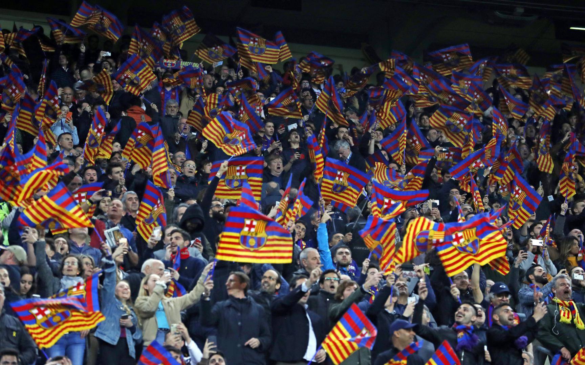
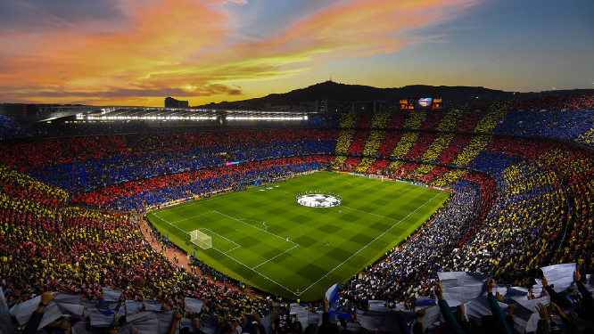
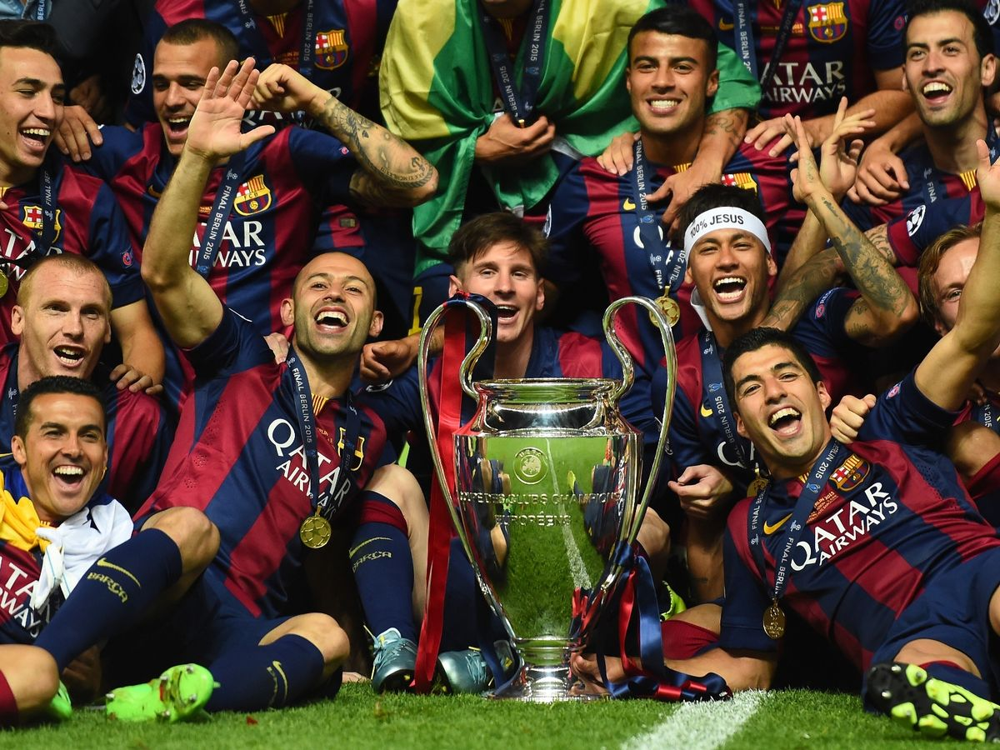
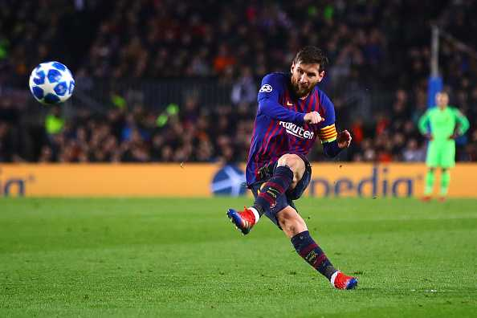
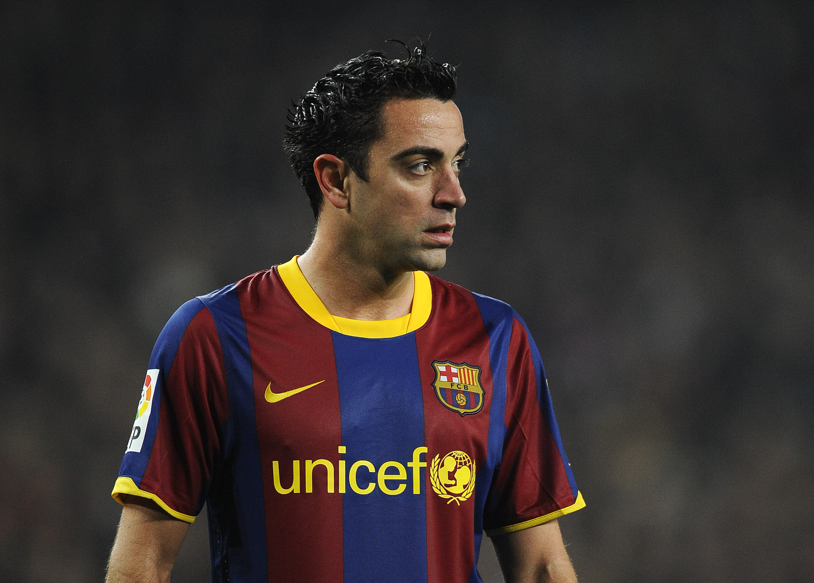

Wat zijn mijn hobby's?
1. Voetbal
1. Voetbal
Verder ben ik veel bezig met voetbal.Ik support FC Barcelona al sinds ik rond de 7 was. Mijn lievelingsspelers zijn Lionel Messi en Xavi Hernandez.
 |
 |
 |
Mijn favoriete spelers zijn:
|  |  |
2. Muziek
Ook luister ik veel naar muziek. Voornamelijk Frans of Engelstalig. Voorbeelden van artiesten zijn: Soolking, PNL, Lil Tjay en M Huncho